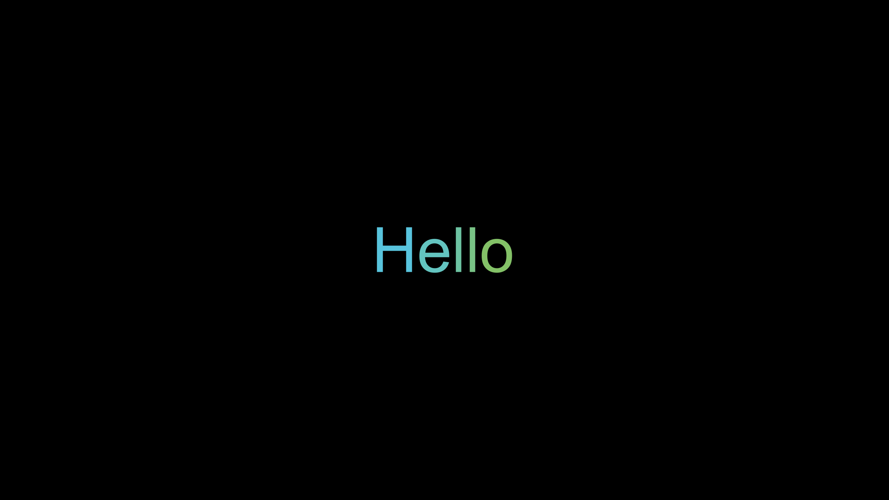
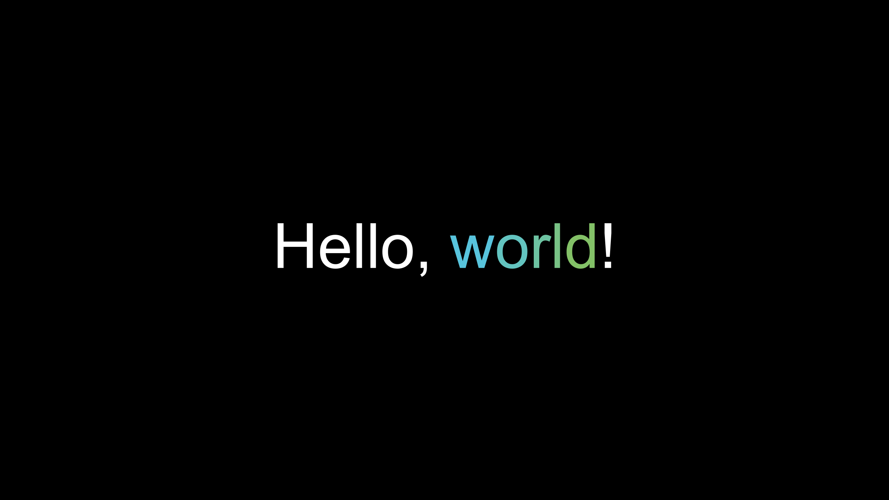

Text¶
Text 使用 cairo 来生成文字的svg，
所以它不需要 LaTeX 环境，而且可以方便地更改字体，但是不能够书写公式。
需要更改字体，而且要使用公式的，可以尝试cigar666编写的 MyText
{kind=link}
MK做了一个关于常用 Text 的视频：
〔manim教程〕第四讲 SVG、图片与文字
由于这个类的作者XiaoYoung写了中文的文档，这里就不放出文档字符串了，以下是原文档：
TextSetting¶
-
class
manimlib.mobject.svg.text_mobject.TextSetting(start, end, font, slant, weight, line_num=- 1)¶ 临时类，只是用来传递一下参数，方便底层实现，下个版本应该会消失
{kind=link}
Text¶
-
class
manimlib.mobject.svg.text_mobject.Text(text, **config)¶ 传入一个文件名指向输入的SVG文件

TextDemo¶
from manimlib.imports import *
class Demo(Scene):
def construct(self):
text = Text('Hello, world!')
self.play(Write(text))
参数：
text:接收一个
str，如'Hello, world!'不支持LaTex语法
如果只有一行，字符串前后的空格会被忽略(指不会产生长度，但是这些空格会被计算，可以用下标访问)
\t默认会被替换为4个空格，可以通过调整tab_width改变这一行为
color:接收一个
str，如'#FFFFFF'或者是定义在
constants.py里的颜色常量，如BLUEDemo
text = Text('Hello', color=BLUE)
t2c:text2color的缩写接收一个
dict，如{'text': color}或者切片模式，如
{'[1:4]': color}Demo
text = Text('Hello, world!', t2c={'world':BLUE})
gradient:接收一个
tuple，如(BLUE, GREEN, '#FFFFFF')Demo
text = Text('Hello', gradient=(BLUE, GREEN))
t2g:text2gradient的缩写接收一个
dict，如{'text': (BLUE, GREEN, '#FFFFFF')}或者切片模式，如
{'[1:4]': (BLUE, GREEN, '#FFFFFF')}Demo
text = Text('Hello, world!', t2g={'world':(BLUE, GREEN)})
font:- 接收一个
str, 如
'Source Han Sans'，请确保字体名正确
- 接收一个
不支持直接读取给定的字体文件路径，必须先将字体安装到系统中才能使用
Demo
text = Text('Hello', font='Source Han Sans')
t2f:text2font的缩写接收一个
dict，如{'text': 'Source Han Sans'}或者切片模式，如
{'[1:4]': 'Source Han Sans'}Demo
text = Text('Hello, world!', t2f={'world':'Forte'})
slant:斜体选项:
NORMAL或者ITALIC其实还有一个
OBLIQUE，但是貌似效果跟ITALIC一样Demo
text = Text('Hello', slant=ITALIC)
t2s:text2slant的缩写接收一个
dict，如{'text': ITALIC}或者切片模式，如
{'[1:4]': ITALIC}Demo
text = Text('Hello, world!', t2s={'world':ITALIC})
weight:字重(粗细)选项:
NORMAL或者BOLD目前只支持调用
NORMAL和BOLD是因为底层的包不支持其它选项如果想用Light、Condensed等选项可以在调用字体的时候声明，如
'Open Sans Light'- 更多有关Light等选项的问题，可以参考:
Demo
text = Text('Hello', weight=BOLD)
t2w:text2weight的缩写接收一个
dict，如{'text': BOLD}或者切片模式，如
{'[1:4]': BOLD}Demo
text = Text('Hello, world!', t2w={'world':BOLD})
size:不建议使用
接收一个数且该数要大于0.1
不是线性的，因为
SVGMobject的缩放逻辑有点迷如果小于0.1可能会出现锯齿
目前与MUnit没有关联，所以玄学调参
如果需要精确控制大小，建议使用
.scale()Demo
text = Text('Hello', size=5)
lsh:line_spacing_height的缩写不建议使用
默认与
size相等非线性(存疑)
与MUnit没有关联
Demo
text = Text('Hello\nWorld', lsh=1.5)
其它:
还有一些从
Mobject继承来的参数也可以使用如:
fill_color、fill_opacity、stroke_color、stroke_width
CONFIG中属性：
Mobjcet:
color: 默认为WHITEheigth: 默认为None
Text:
font: 默认为''gradient: 默认为Nonelsh: 默认为-1size: 默认为1slant: 默认为NORMALweight: 默认为NORMALt2c: 默认为{}t2f: 默认为{}t2g: 默认为{}t2s: 默认为{}t2w: 默认为{}tab_width: 默认为4
方法：
Mobject:
set_color(self, color):text.set_color(BLUE)text[7:12].set_color(BLUE)
set_color_by_gradient(self, gradient):text.set_color_by_gradient(BLUE, GREEN)text[7:12].set_color_by_gradient(BLUE, GREEN)
Text:
set_color_by_t2c(self, t2c):text.set_color_by_t2c({'world':BLUE})
set_color_by_t2g(self, t2g):text.set_color_by_t2g({'world':(BLUE, GREEN)})
其它：
切片模式:

TextSlice¶
text = Text( 'Google', t2c={ '[:1]':'#3174f0', '[1:2]':'#e53125', '[2:3]':'#fbb003', '[3:4]':'#3174f0', '[4:5]':'#269a43', '[5:]':'#e53125', } )
UTF-8:

TextUTF8¶
from manimlib.imports import * script = ''' Hello 你好 こんにちは 안녕하세요 ''' class Demo(Scene): def construct(self): text = Text(script, font='Source Han Sans') self.play(Write(text))
目前对GBK(中日韩)文字的支持没有太大问题
但是对于其它文字，如印度语、阿拉伯语的显示有很大问题
Paragraph¶
-
class
manimlib.mobject.svg.text_mobject.Paragraph(*text, **config)¶ 段落，方便实现code_mobject.py中的Code
{kind=link}

ParagraphExample¶
class ParagraphExample(Scene):
def construct(self):
t = Paragraph(
'this is a awesome',
'paragraph',
'With \nNewlines',
'\tWith Tabs',
' With Spaces',
'With Alignments',
'center', "left", "right",
line_spacing=0.1,
alignment="left",
t2c={"Tabs": RED}
)
t.set_alignment("center", 7)
t.set_alignment("left", 8)
t.set_alignment("right", 9)
t[0][5].set_color(GREEN)
t[0][6].set_color(GREEN)
t[1][0:4].set_color(YELLOW)
rect = SurroundingRectangle(t)
self.add(t,rect)

ParagraphExample2¶
class Test7(Scene):
def construct(self):
t = Paragraph(
'this is a awesome',
'paragraph',
'With \nNewlines',
'\tWith Tabs',
' With Spaces',
'With Alignments',
'center', "left", "right",
line_spacing=0.1,
alignment="left",
t2c={"Tabs": RED}
)
self.add(t)
self.play(t.shift, RIGHT)
rect = SurroundingRectangle(t)
self.add(rect)
self.play(t.set_alignment, "right", 9)
self.play(t.set_all_lines_alignment, "center")
self.wait()